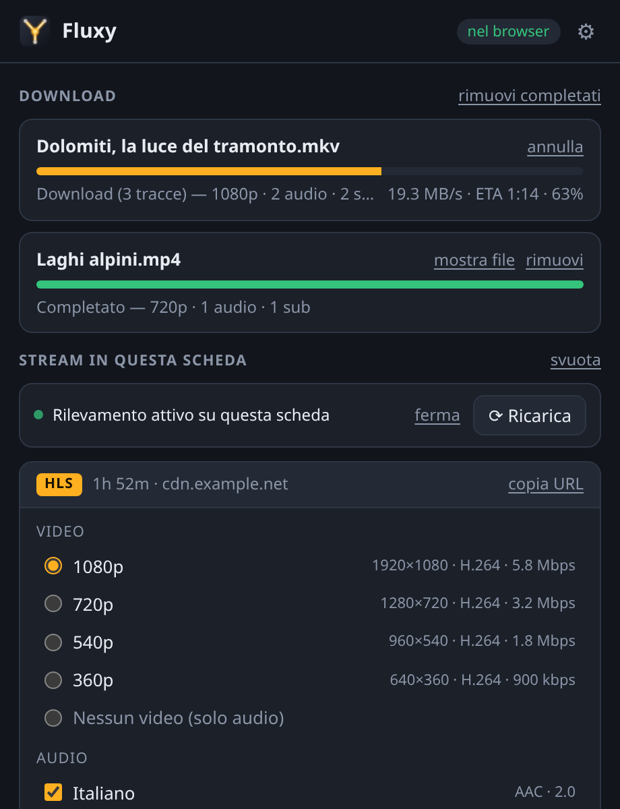

Veloce, senza perdere qualità.
⇉
Segmenti in parallelo, con nuovi tentativi automatici se la connessione cade.
≡
Copia, non ricodifica: l'unione di un film richiede secondi e il file resta identico all'originale.
✓
Lingue e tracce predefinite già impostate: il file si apre pronto in qualsiasi player.
⊘
Nessun tracciamento: niente account, niente statistiche, nessun server di Fluxy.
